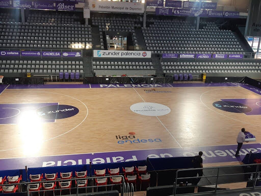
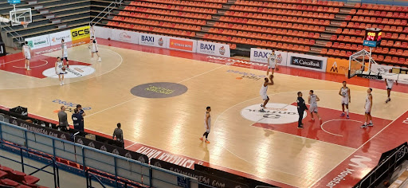
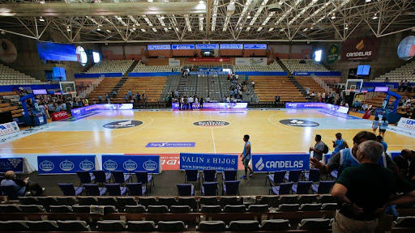
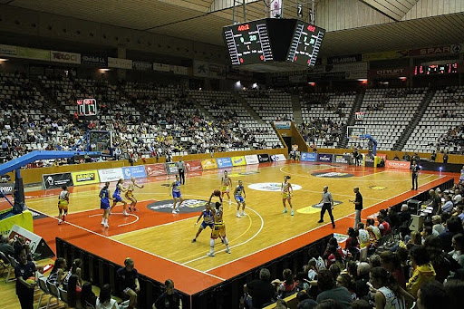

Estadios más conocidos
- Pabellón Municipal de Palencia
Ubicación: Palencia, España
Capacidad: 8.140 espectadores
Equipo local: Zunder Palencia (Liga ACB)
Inauguración: 1992

- Pavelló Nou Congost (BAXI Manresa)
Ubicación: Manresa, España.
Capacidad: 5.000 espectadores.
Equipo local: BAXI Manresa (Liga ACB).
Inauguración: 1992.

- Pazo Provincial Dos Deportes De Lugo
Ubicación: Lugo, España.
Capacidad: 6.500 espectadores.
Equipo local: Club Baloncesto Breogán (Liga ACB).
Inauguración: 1992.

- Pabellón Municipal Girona - Fontajau
Ubicación: Gerona, España.
Capacidad: 5.500 espectadores.
Equipo local: Bàsquet Girona (Liga ACB).
Inauguración: 1996.

- Pabellón Olímpic de Badalona
Ubicación: Badalona, España.
Capacidad: 12.500 espectadores.
Equipo local: Club Joventut Badalona (Liga ACB).
Inauguración: 1990.

Características: